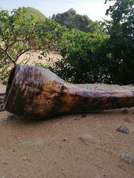

Aerófono Tolteca de Maguey (Tlatzotzonametl Ancestral)
Aerófono de tono grave continuo elaborado con la inflorescencia seca del agave (quiote) o su base principal. Genera una resonancia vibracional de baja frecuencia que promueve el alineamiento de los centros energéticos y la meditación profunda.
Proceso de Elaboración Artesanal:
1. Corte Consciente: Recolección sustentable del quiote seco en el campo, respetando el ciclo biológico del agave.
2. Vaciado Manual: Apertura a lo largo del tallo con gubias y herramientas de mano para retirar la médula suave.
3. Soplado y Curado: Sellado interior mediante resinas botánicas (copal) y aceites naturales para potenciar la acústica.
4. Acabado: Encerado artesanal con cera pura de abeja en la embocadura para dar comodidad al soplo.
1. Corte Consciente: Recolección sustentable del quiote seco en el campo, respetando el ciclo biológico del agave.
2. Vaciado Manual: Apertura a lo largo del tallo con gubias y herramientas de mano para retirar la médula suave.
3. Soplado y Curado: Sellado interior mediante resinas botánicas (copal) y aceites naturales para potenciar la acústica.
4. Acabado: Encerado artesanal con cera pura de abeja en la embocadura para dar comodidad al soplo.